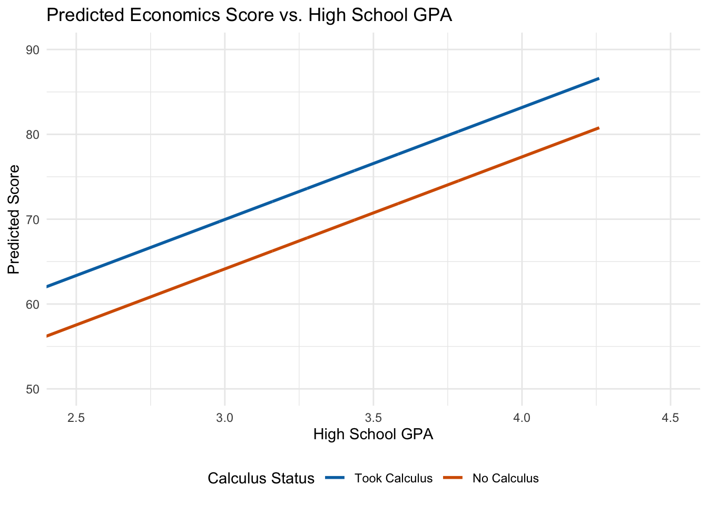
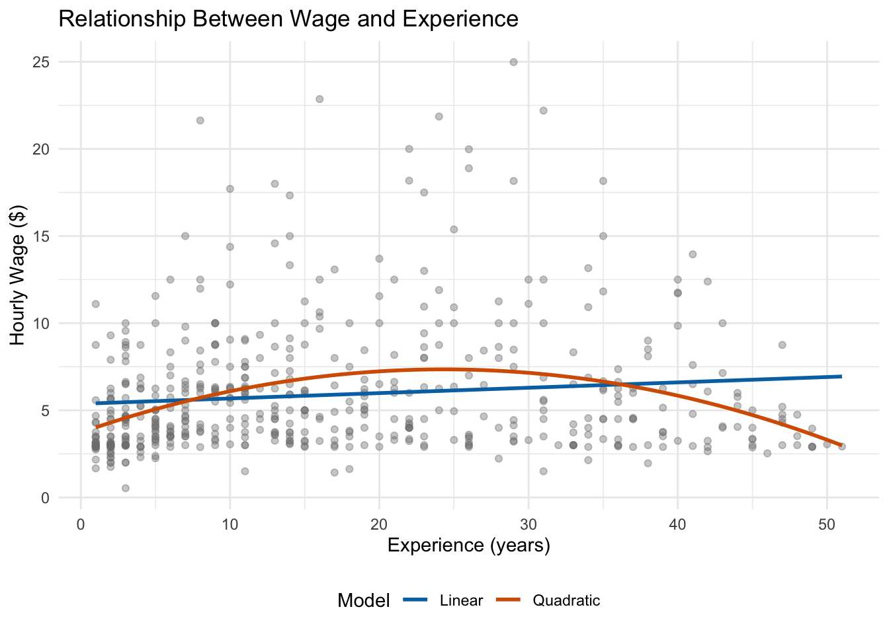

So far, we have primarily considered quantitative variables in our regression models: wages measured in dollars, years of education, birthweight in grams, and so on. But in empirical work, some of the most important variables are qualitative: race, gender, region, industry, or whether someone participated in a program. This chapter introduces techniques for incorporating categorical information into regression models and for modeling non-linear relationships.
7.1 Categorical Variables in Regression
Regression requires numeric inputs, so we cannot simply include a variable like “region” with values “South,” “Midwest,” “Northeast,” and “West” directly in our model. We need a way to translate qualitative information into numbers.
7.1.1 Dummy Variables
The most common approach is to create dummy variables (also called binary or indicator variables). A dummy variable takes only two values: 1 if the observation has a particular characteristic, and 0 otherwise.
Consider this simple example from the Star Wars dataset:
The species variable is qualitative—we cannot use it directly in a regression. But we can create a dummy variable called human that equals 1 for humans and 0 for droids:
Now we have a numeric variable that captures whether each character is human.
7.1.2 Interpreting Dummy Variable Coefficients
To see how dummy variables work in regression, let’s examine a practical example. Suppose we want to know whether taking calculus in high school affects performance in college economics courses. We have data on students’ economics exam scores, their high school GPA, and whether they took calculus.
where calculus equals 1 if the student took calculus and 0 otherwise.
lm1 <-lm(score ~ hsgpa + calculus, data = wooldridge::econmath)summary(lm1)
Call:
lm(formula = score ~ hsgpa + calculus, data = wooldridge::econmath)
Residuals:
Min 1Q Median 3Q Max
-54.355 -7.457 1.148 8.699 29.825
Coefficients:
Estimate Std. Error t value Pr(>|t|)
(Intercept) 24.5276 4.0759 6.018 0.000000002624 ***
hsgpa 13.2038 1.2257 10.772 < 0.0000000000000002 ***
calculus 5.8243 0.8992 6.477 0.000000000158 ***
---
Signif. codes: 0 '***' 0.001 '**' 0.01 '*' 0.05 '.' 0.1 ' ' 1
Residual standard error: 12.18 on 853 degrees of freedom
Multiple R-squared: 0.1756, Adjusted R-squared: 0.1737
F-statistic: 90.87 on 2 and 853 DF, p-value: < 0.00000000000000022
How do we interpret these coefficients? The coefficient on hsgpa (\(\hat{\beta}_1 \approx 13.2\)) tells us that a one-point increase in high school GPA is associated with about a 13-point increase in economics score, holding calculus status constant.
The coefficient on calculus (\(\hat{\beta}_2 \approx 5.8\)) tells us that students who took calculus score about 5.8 points higher on average than students who did not, holding GPA constant. This is the difference in intercepts between the two groups.
7.1.3 Visualizing What Dummy Variables Do
To understand what’s happening geometrically, think about the regression line for each group.
For students who did not take calculus (calculus = 0): \[
\widehat{score} = \hat{\beta}_0 + \hat{\beta}_1(hsgpa) + \hat{\beta}_2(0) = \hat{\beta}_0 + \hat{\beta}_1(hsgpa)
\]
For students who did take calculus (calculus = 1): \[
\widehat{score} = \hat{\beta}_0 + \hat{\beta}_1(hsgpa) + \hat{\beta}_2(1) = (\hat{\beta}_0 + \hat{\beta}_2) + \hat{\beta}_1(hsgpa)
\]
Both groups have the same slope (\(\hat{\beta}_1\)), but the calculus group has a higher intercept by exactly \(\hat{\beta}_2\). The dummy variable shifts the regression line up or down:
Figure 7.1: Dummy variables shift the intercept while keeping the slope constant.

Key Insight
A dummy variable coefficient represents the difference in intercepts between groups. Both groups share the same slope—the effect of increasing \(x\) by one unit is the same regardless of group membership.
7.2 The Dummy Variable Trap
You might wonder: why not include dummy variables for both calculus-takers and non-calculus-takers? In other words, why not estimate:
The problem is that this creates perfect multicollinearity. For every student in the dataset: \[
calculus + no\_calculus = 1
\]
This means \(no\_calculus = 1 - calculus\), so one variable is a perfect linear function of the other. OLS cannot separately identify the effects of perfectly collinear variables.
This is called the dummy variable trap. To avoid it, we always omit one category. The omitted category becomes our baseline or reference group, and all coefficients are interpreted relative to this baseline.
In our example, non-calculus-takers are the baseline. The coefficient \(\hat{\beta}_2 = 5.8\) means calculus-takers score 5.8 points higher than non-calculus-takers.
7.3 Multiple Categories
What if our categorical variable has more than two values? Consider the Palmer Penguins data, where species can be Adelie, Chinstrap, or Gentoo.
To include species in a regression, we create \(g - 1\) dummy variables where \(g\) is the number of categories. With three species, we need two dummy variables:
Call:
lm(formula = flipper_length_mm ~ body_mass_g + species_Chinstrap +
species_Gentoo, data = penguin_data)
Residuals:
Min 1Q Median 3Q Max
-14.5455 -3.1845 0.1307 3.3533 17.5313
Coefficients:
Estimate Std. Error t value Pr(>|t|)
(Intercept) 158.8602606 2.3865767 66.564 < 0.0000000000000002 ***
body_mass_g 0.0084021 0.0006339 13.255 < 0.0000000000000002 ***
species_Chinstrap 5.5974403 0.7882166 7.101 0.00000000000733 ***
species_Gentoo 15.6774699 1.0906591 14.374 < 0.0000000000000002 ***
---
Signif. codes: 0 '***' 0.001 '**' 0.01 '*' 0.05 '.' 0.1 ' ' 1
Residual standard error: 5.395 on 338 degrees of freedom
(2 observations deleted due to missingness)
Multiple R-squared: 0.8541, Adjusted R-squared: 0.8528
F-statistic: 659.4 on 3 and 338 DF, p-value: < 0.00000000000000022
Interpretation:
\(\hat{\beta}_1 \approx 0.008\): A 1-gram increase in body mass is associated with a 0.008 mm increase in flipper length, holding species constant.
\(\hat{\beta}_2 \approx 5.6\): Chinstrap penguins have flippers about 5.6 mm longer than Adelie penguins of the same body mass.
\(\hat{\beta}_3 \approx 15.7\): Gentoo penguins have flippers about 15.7 mm longer than Adelie penguins of the same body mass.
7.3.1 Choosing the Baseline Category
How should we choose which category to omit? It depends on our research question.
If we only care about controlling for the categorical variable (not interpreting its coefficients), then the choice doesn’t matter—the coefficient on our main variable of interest won’t change.
If we do care about interpreting the dummy coefficients, choose a baseline that makes interpretation natural. For studying the gender wage gap, making “male” the baseline means the female coefficient directly measures the wage gap relative to men.
Let’s verify that changing the baseline doesn’t affect other coefficients:
# Switching baseline to Gentoopenguin_data <- penguin_data |>mutate(species_Adelie =case_when(species =="Adelie"~1, TRUE~0))lm_penguin2 <-lm(flipper_length_mm ~ body_mass_g + species_Chinstrap + species_Adelie, data = penguin_data)# Compare body mass coefficientscat("Body mass coefficient (Adelie baseline):", round(coef(lm_penguin)["body_mass_g"], 5), "\n")
Body mass coefficient (Adelie baseline): 0.0084
cat("Body mass coefficient (Gentoo baseline):", round(coef(lm_penguin2)["body_mass_g"], 5))
Body mass coefficient (Gentoo baseline): 0.0084
The coefficient on body mass is identical regardless of which species is the baseline.
7.4 Factor Variables in R
Creating dummy variables manually is tedious, especially when categories are numerous. R’s factor variables automate this process.
When you include a factor variable in a regression, R automatically creates the necessary dummy variables and omits one category:
# Convert species to factorpenguin_data <- penguins |>mutate(species_f =factor(species))# R handles dummy creation automaticallylm_factor <-lm(flipper_length_mm ~ body_mass_g + species_f, data = penguin_data)summary(lm_factor)
Call:
lm(formula = flipper_length_mm ~ body_mass_g + species_f, data = penguin_data)
Residuals:
Min 1Q Median 3Q Max
-14.5455 -3.1845 0.1307 3.3533 17.5313
Coefficients:
Estimate Std. Error t value Pr(>|t|)
(Intercept) 158.8602606 2.3865767 66.564 < 0.0000000000000002 ***
body_mass_g 0.0084021 0.0006339 13.255 < 0.0000000000000002 ***
species_fChinstrap 5.5974403 0.7882166 7.101 0.00000000000733 ***
species_fGentoo 15.6774699 1.0906591 14.374 < 0.0000000000000002 ***
---
Signif. codes: 0 '***' 0.001 '**' 0.01 '*' 0.05 '.' 0.1 ' ' 1
Residual standard error: 5.395 on 338 degrees of freedom
(2 observations deleted due to missingness)
Multiple R-squared: 0.8541, Adjusted R-squared: 0.8528
F-statistic: 659.4 on 3 and 338 DF, p-value: < 0.00000000000000022
Notice the coefficients are identical to our manual approach. R chose “Adelie” as the baseline because it comes first alphabetically.
To change the baseline category, use the relevel() function:
# Make Gentoo the baselinepenguin_data <- penguin_data |>mutate(species_f =relevel(species_f, ref ="Gentoo"))lm_factor2 <-lm(flipper_length_mm ~ body_mass_g + species_f, data = penguin_data)summary(lm_factor2)
Call:
lm(formula = flipper_length_mm ~ body_mass_g + species_f, data = penguin_data)
Residuals:
Min 1Q Median 3Q Max
-14.5455 -3.1845 0.1307 3.3533 17.5313
Coefficients:
Estimate Std. Error t value Pr(>|t|)
(Intercept) 174.5377305 3.2542422 53.634 < 0.0000000000000002 ***
body_mass_g 0.0084021 0.0006339 13.255 < 0.0000000000000002 ***
species_fAdelie -15.6774699 1.0906591 -14.374 < 0.0000000000000002 ***
species_fChinstrap -10.0800297 1.1787380 -8.552 0.000000000000000428 ***
---
Signif. codes: 0 '***' 0.001 '**' 0.01 '*' 0.05 '.' 0.1 ' ' 1
Residual standard error: 5.395 on 338 degrees of freedom
(2 observations deleted due to missingness)
Multiple R-squared: 0.8541, Adjusted R-squared: 0.8528
F-statistic: 659.4 on 3 and 338 DF, p-value: < 0.00000000000000022
Now coefficients are relative to Gentoo penguins.
7.5 Non-Linear Relationships: Polynomial Models
So far we’ve assumed linear relationships between variables. But many economic relationships are non-linear. Consider the effect of work experience on wages: at low experience levels, additional experience substantially increases productivity and wages; but at very high experience levels, workers may become less productive as they age.
This suggests a quadratic relationship—wages increase with experience at first, then eventually decrease:
Figure 7.2: A quadratic model (orange) often fits experience-wage data better than a linear model (blue).

7.5.1 Estimating Quadratic Models
To estimate a quadratic model, we simply include both the variable and its square:
Call:
lm(formula = log(wage) ~ exper + exper2, data = wage_data)
Residuals:
Min 1Q Median 3Q Max
-2.05828 -0.33126 -0.05044 0.31806 1.47493
Coefficients:
Estimate Std. Error t value Pr(>|t|)
(Intercept) 1.2952908 0.0494812 26.177 < 0.0000000000000002 ***
exper 0.0455341 0.0058595 7.771 0.0000000000000415 ***
exper2 -0.0009439 0.0001291 -7.312 0.0000000000009933 ***
---
Signif. codes: 0 '***' 0.001 '**' 0.01 '*' 0.05 '.' 0.1 ' ' 1
Residual standard error: 0.5041 on 523 degrees of freedom
Multiple R-squared: 0.104, Adjusted R-squared: 0.1006
F-statistic: 30.35 on 2 and 523 DF, p-value: 0.0000000000003377
7.5.2 Interpreting Quadratic Models
With a quadratic term, the marginal effect of \(x\) on \(y\) is no longer constant. Taking the derivative:
\[
\frac{\partial y}{\partial x} = \beta_1 + 2\beta_2 x
\]
The effect of experience depends on your current level of experience.
With our estimates (\(\hat{\beta}_1 \approx 0.046\), \(\hat{\beta}_2 \approx -0.0009\)):
For a worker with 10 years of experience: \[
0.046 + 2(-0.0009)(10) = 0.028 \approx 2.8\%
\]
An additional year of experience increases wages by about 2.8%.
For a worker with 45 years of experience: \[
0.046 + 2(-0.0009)(45) = -0.035 \approx -3.5\%
\]
An additional year actually decreases wages—the worker is past the peak of the experience-wage relationship.
Finding the Peak
The experience level where wages are maximized occurs where the marginal effect equals zero: \[
\beta_1 + 2\beta_2 x^* = 0 \implies x^* = -\frac{\beta_1}{2\beta_2}
\]
With our estimates: \(x^* = -\frac{0.046}{2(-0.0009)} \approx 25.6\) years.
7.6 Logarithmic Transformations
We’ve already seen that taking the log of the dependent variable changes how we interpret coefficients. Let’s review the different cases systematically.
7.6.1 Log-Linear Models
When the dependent variable is logged but independent variables are not: \[
\ln(Y) = \beta_0 + \beta_1 X + \mu
\]
Interpretation: A one-unit increase in \(X\) is associated with a \(100 \times \beta_1\) percent change in \(Y\).
This works because \(\ln(Y_1) - \ln(Y_0) = \ln(Y_1/Y_0) \approx (Y_1 - Y_0)/Y_0\) for small changes.
Approximation Warning
The “multiply by 100” interpretation is an approximation that works well when \(\beta_1\) is small (less than about 0.2 in absolute value). For larger coefficients, use the exact formula: percent change = \(100 \times (e^{\beta_1} - 1)\).
7.6.2 Linear-Log Models
When independent variables are logged but the dependent variable is not: \[
Y = \beta_0 + \beta_1 \ln(X) + \mu
\]
Interpretation: A 1 percent increase in \(X\) is associated with a \(\beta_1/100\) unit change in \(Y\).
7.6.3 Log-Log Models (Elasticities)
When both sides are logged: \[
\ln(Y) = \beta_0 + \beta_1 \ln(X) + \mu
\]
Interpretation: A 1 percent increase in \(X\) is associated with a \(\beta_1\) percent change in \(Y\).
This is the elasticity of \(Y\) with respect to \(X\)—a unit-free measure of responsiveness.
7.6.4 Summary Table
Model
Equation
Interpretation of \(\beta_1\)
Linear-Linear
\(Y = \beta_0 + \beta_1 X\)
1-unit ↑ in \(X\) → \(\beta_1\)-unit change in \(Y\)
Log-Linear
\(\ln(Y) = \beta_0 + \beta_1 X\)
1-unit ↑ in \(X\) → \((100 \times \beta_1)\%\) change in \(Y\)
Linear-Log
\(Y = \beta_0 + \beta_1 \ln(X)\)
1% ↑ in \(X\) → \(\beta_1/100\) unit change in \(Y\)
Log-Log
\(\ln(Y) = \beta_0 + \beta_1 \ln(X)\)
1% ↑ in \(X\) → \(\beta_1\%\) change in \(Y\) (elasticity)
7.7 Application: Policy Evaluation with Dummy Variables
Dummy variables are essential for evaluating policies and programs. Suppose we want to estimate the effect of a job training program on wages:
where training equals 1 if the person participated in the program and 0 otherwise.
The coefficient \(\beta_1\) measures the treatment effect—the percentage difference in wages between program participants and non-participants, controlling for education and experience.
This is essentially a regression-based version of comparing treatment and control groups, where the control variables help us account for differences between those who did and didn’t participate.
7.8 Summary
This chapter introduced two powerful extensions to basic regression: categorical variables and non-linear functional forms.
Dummy variables allow us to include qualitative information in regression models. The coefficient on a dummy variable represents the difference in intercepts between groups—the effect of having a particular characteristic relative to the baseline category. When a categorical variable has \(g\) categories, we include \(g - 1\) dummy variables to avoid perfect multicollinearity (the dummy variable trap).
Polynomial models capture non-linear relationships by including squared or higher-order terms. With quadratic models, the marginal effect of \(x\) on \(y\) depends on the current level of \(x\), allowing us to model relationships that increase and then decrease (or vice versa).
Logarithmic transformations change the interpretation of coefficients: log-linear models give percentage changes, linear-log models give the effect of percentage changes, and log-log models give elasticities. These transformations are especially useful when dealing with variables like wages or prices that are right-skewed and where percentage changes are more meaningful than absolute changes.
7.9 Check Your Understanding
For each question below, select the best answer from the dropdown menu. The dropdown will turn green if correct and red if incorrect.
Show Explanation
With a log-linear model (log on the left side only), we multiply the coefficient by 100 to get the percentage interpretation. A coefficient of -0.15 means women earn approximately 15% less than men (the baseline category), holding other variables constant.
If we include dummy variables for all g categories plus an intercept, the dummy variables will sum to 1 for every observation, creating perfect collinearity with the intercept. This is the “dummy variable trap.” Omitting one category solves this problem.
A negative coefficient on the squared term means the parabola opens downward. Combined with a positive coefficient on the linear term, this creates an inverted-U shape: wages increase with experience initially, but at a decreasing rate, and eventually begin to decline.
In a log-log model, both variables are in logs, so the coefficient is an elasticity. It tells us the percentage change in Y for a 1% change in X. Here, a 1% increase in X is associated with a 0.5% increase in Y.
Changing the baseline category changes how the dummy coefficients are interpreted (they become relative to a different group), but it doesn’t affect coefficients on other variables in the model. The model’s predictions and fit remain identical.
The experience level that maximizes wages is found by setting the derivative equal to zero: 0.04 + 2(-0.0008)(exper) = 0. Solving: exper = 0.04/(2 × 0.0008) = 0.04/0.0016 = 25 years.
Bailey, Michael A. 2020. Real Econometrics: The Right Tools to Answer Important Questions. Oxford University Press.
Wooldridge, Jeffrey M. 2019. Introductory Econometrics: A Modern Approach. 7th ed. Cengage Learning.